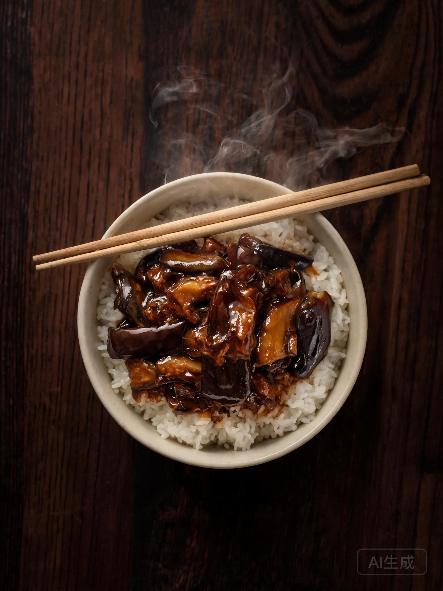
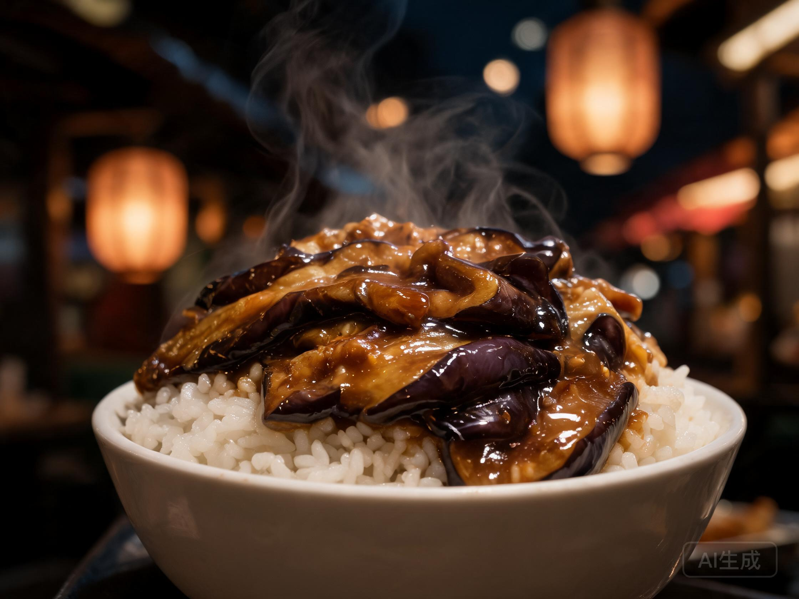
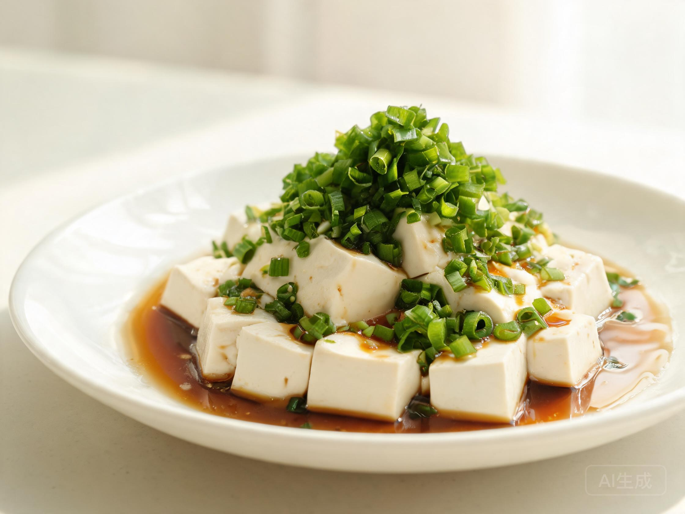
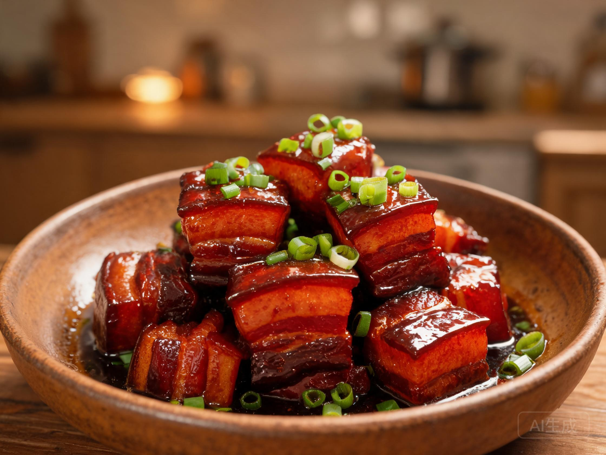

食事图谱 · FOOD ATLAS
深夜食堂的
四张地图
凭一口温热，辨认一座城市
一段开场白
食物是我认识一座城市的方式。深夜巷口的那盏灯、铁锅里冒出来的白汽，比地图更准确地告诉我——该往哪里走，该和谁坐一桌。

01 · 入口茄子盖饭
推荐 ★★★★南通 · 冬 · 米饭杀手
茄子炸到外皮微皱，裹着甜口的酱汁，一口气碰到米饭的边缘。一勺下去，是会让整桌安静三秒的那种好吃。

02 · 温热小葱拌豆腐
推荐 ★★★苏州 · 春 · 清白不争
豆腐嫩得不敢碰，小葱只在出锅前撒一把绿的。越是简单的菜，越看得出掌勺人的心意。

03 · 抚慰红烧肉
推荐 ★★★★★上海 · 冬 · 浓油赤酱
肥而不腻，入口先是一层柔和的甜，再是化开的软糯。配白饭能吃下两碗。越是沮丧的夜，越需要这一口踏实的甜。
时令食材 · THIS SEASON
冬季萝卜
冬天的萝卜水分足、不辣。用来炖汤清甜回甘，拌着吃脆爽解腻。便宜，却有让人安心的力量。